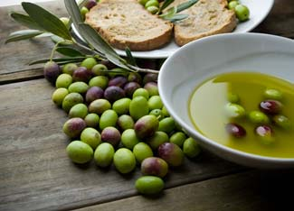

Olive oil has a variety of wonderful flavors - from mild to citrusy to peppery - that complement almost all meats, salads and vegetables. Whereas corn oil just tastes like, well, corn oil, the taste of a specific olive oil varies based on the region (this flavor variation is known as terroir, or the taste of place) where its olives were grown and the growing conditions at that time - much like wine.
But taste is not olive oil’s only virtue; it also contains a fat that is actually good for you. Olive oil is rich in Omega-3 fats and research has found that diets rich in Omega-3 - such as those common in the traditional Greek diet - have a lower risk of heart disease then those who consume the saturated fats of dairy products and red meat - which are common in the typical American diet.
The highest-quality olive oils come from the first cold pressing of the olive as soon after harvesting as possible, preferably within 24 hours, to minimize flavor-altering oxidation of the olive. Cold pressing entails no heat or chemicals; therefore, the flavor of the oil is not altered in the pressing process.
The International Olive Council in Madrid, Spain, sets the standards for olive oil grades. To be labeled ‘extra virgin,’ an oil must meet certain flavor standards, as well as have an oleic acid level of less than 0.8 percent. Oleic acid is related to the level of free fatty acids in the oil, which are a product of deterioration. The other two categories for food-quality olive oil are virgin (from the first pressing but with a higher acidity) and pure (a blend of refined and virgin oils). Light olive oil, a U.S. designation, refers to the light olive flavor of the oil and not its fat content.
The color of olive oil, golden to green, is an indication of the type of olive used to make the oil, and how ripe the olives were when they were harvested. Too green and the oil will be bitter, too ripe and the olives will have lost their essential flavors. A blend of a few green and mostly reddish-black olive varieties yields the best flavor.
Extra virgin olive oil is prone to oxidation, which alters the flavor. Plus, too much heat or light can make the oil turn rancid. So purchase smaller containers of this type, and keep them in a dark pantry at room temperature.
For your taste, find a good quality extra virgin oil whose flavor you really like for drizzling over pastas and salads, and dipping with a good crusty artisan bread. Heat alters the flavor of olive oil, so you can use a lower grade for cooking - virgin or pure - which has fewer subtle flavors.
Recently the Mother Earth News editors tasted several extra virgin olive oils to see what we liked and didn’t like, and if we could detect their flavor differences. We know, what a tough job!
Many grocery stores carry half a dozen or so affordable brands of extra virgin olive oil, usually for less than $15 for a 17 ounce bottle. Of course, there are gourmet examples out there, such as Campo Corto Extra Virgin Olive Oil, which comes from Tuscany and costs $50 for a 16.9 ounce bottle.
Curious as we were about that one, we wanted to focus our evaluations on brands that are widely available. In the end, we tasted all of these oils, with incredible bread from Wheatfields Bakery of Lawrence, Kan.: Bertolli, Filippo Berio, Pompeian, Carapelli, DaVinci, Colavita and Newman’s Own Organic.
So what did we think? After thorough evaluations, the results came out all over the board! Remember that olive oils have varying tastes? Some folks really loved Pompeian, saying, “more olive flavor than others;” while others did not like that oil, calling it “bitter with an unpleasant aftertaste.”
Newman’s Own received the most consistently positive comments of the seven we tested. There are many more options out there, and we could probably bring ourselves to test olive oils again, but the bottom line seems to be personal preference and terroir.
So, we recommend you use extra virgin olive oil for non-cooked preparations such as pasta, salads and for dipping bread. Try a few small bottles and see which one your family prefers. Keep virgin or pure olive oil on hand for cooking. And remember to feel good about the olive oil you consume, as it is good for you, too.
|
 FOTOLIA/RICCARDO BRUNI Good quality extra virgin olive oil, blended from a variety of olives, is a wonderful complement to salads, pastas and is especially good for dipping with bread. |
|
|